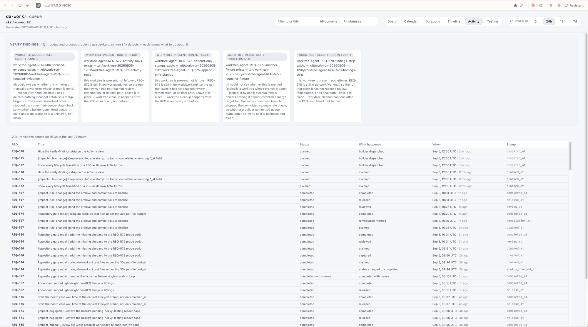

Proposal · Kanban board · Activity view
2026-09-05 · one cause, three mockups you can scroll, one captured request · written before any implementation
This is a design proposal, not a completed-work report. Nothing here has shipped. The mockups below are hand-built pages that copy the board's own stylesheet and today's real Activity rows; they are not the board.
Verdict
The double scroll has one cause. The Activity table sits in its own scroll box capped at 70% of the viewport height, and that box sits inside the board area, which is itself the page's scroll container. Two nested scroll regions means two scrollbars, and the mouse wheel moves whichever one the pointer happens to be over.
The fix is to leave exactly one scroll surface. Three ways to do that are mocked up below. M1 (the board scrolls, the table is plain content, the column header sticks to the top) is the recommendation: it deletes two CSS declarations, keeps the board's one-scroll-container rule that every other view already follows, and changes nothing about how rows are drawn.
M3 is M1 plus the transition count pinned above the header. M2 makes the table fill the viewport with its own scroll and turns the board's scrolling off for this view; it looks clean but gives the Activity view a different scroll model from every other view.
The problem, as reported

Cause, in the shipped stylesheet
Two rules in skills/do-work-board/tools/queue-kanban/web/board.css (board 0.236.20) nest one scroll container inside another:
/* line 421: the board area is THE scroll container by design */
.board-main {
min-height: 0;
overflow-y: auto;
padding: 24px 28px 56px;
}
/* line 3172: the Activity table gets a second one */
.activity-table-scroll {
max-height: 70vh;
overflow: auto;
margin-top: 8px;
font-size: 12px;
}
The block comment above the board rule says it: "The board, not the page, is the scroll container." The Activity view's comment says it "borrows the timeline table's metrics"; the Timeline table also has a scroll box, but there it sits inside a collapsed <details> under a chart, where a cap makes sense. On Activity the table is the whole view, so the cap only splits the scroll in two.
Measured on the live page at 2466×1323 CSS px: the board area is 1231 px tall with 1442 px of content, and the table box is 926 px tall with 6815 px of rows. Both scroll.
Mockups · scroll each one
Each frame is a live page: wheel over it, click the 6h / 24h / 48h / 7d chips, or open it full-size. The rows are the real 2051 Activity rows served by the board at 12:17 UTC today, rendered by a copy of the board's row logic. Only the CSS block printed under each frame differs from the shipped stylesheet. The bottom-right tag is a mockup label, not part of the proposal.
The shipped layout, including the strip, so the comparison starts from what the screenshot shows. Wheel over the strip and the board scrolls; wheel over the rows and only the table scrolls until it hits its end, then the board takes over.
open full-size · static capture
/* no change: shipped rules as printed above */
The table stops being a scroll box and becomes ordinary content of the board area. The column header keeps its existing position: sticky and now sticks to the top of the board area instead of the top of the table box. The summary line scrolls away with the rows, like a caption.
open full-size · static capture
.activity-table-scroll { max-height: none; overflow: visible; }
/* the board's 24px top padding is scrollable content, so rows
would show through above the stuck header; move it onto the
summary line instead */
.board-main { padding-top: 0; } /* Activity view only */
#view-activity { padding-top: 0; }
.activity-summary { padding-top: 40px; }
The Activity view becomes a column that fills the board area: the summary stays at the top, the table takes every remaining pixel and is the only thing that scrolls. Nothing sits below the fold, so the board's own scrollbar never appears on this view. Feels like a log viewer. The cost is that Activity gets a scroll model no other view has, and the board rule "the board is the scroll container" gains a per-view exception.
open full-size · static capture
.board-main { overflow: hidden; display: flex; flex-direction: column;
padding-bottom: 0; } /* Activity view only */
#view-activity.is-active { display: flex; flex-direction: column;
flex: 1 1 auto; min-height: 0; padding-bottom: 0; }
.activity-table-scroll { flex: 1 1 auto; min-height: 0;
max-height: none; overflow: auto; }
Same single scroll as M1. The summary line ("236 transitions across 49 REQs in the last 24 hours") is pinned above the column header, so the count and the window stay readable however far down the reader is. Costs one more sticky element and a fixed summary height so the header offset matches it.
open full-size · static capture
.activity-table-scroll { max-height: none; overflow: visible; margin-top: 0; }
.board-main { padding-top: 0; } /* Activity view only */
#view-activity { padding-top: 0; }
.activity-summary { position: sticky; top: 0; z-index: 2; margin: 0;
height: 40px; line-height: 40px; background: var(--bg-base); }
.activity-table-scroll thead th { top: 40px; }
Side by side
| Variant | Scroll surfaces | What stays visible while scrolling | Where the wheel goes | Change to the board's scroll rule | Rules touched |
|---|---|---|---|---|---|
| M0 current | 2 | Column header, inside the table box only | Depends on where the pointer is | None (the violation is the bug) | 0 |
| M1 one page scroll | 1 | Column header | Always the board | None; Activity starts following it | 4 |
| M2 table fills the viewport | 1 | Summary line and column header | Always the table | Per-view exception: board does not scroll on Activity | 3 |
| M3 one scroll, pinned summary | 1 | Summary line and column header | Always the board | None; Activity starts following it | 6 |
"Rules touched" counts CSS declarations that change or move in the Activity section of the board stylesheet; the M1 and M3 padding moves are scoped to the Activity view so other views keep their 24 px top padding. The detail drawer, filters, and window chips are unaffected in every variant because none of them live inside the table box.
What was captured
No queued or in-flight request covered this. REQ-573 (open the detail drawer from an Activity row) and REQ-579 (render verify findings and skipped probes as compact rows) touch the same view but neither mentions scrolling, and REQ-578 (hide the verify-findings strip) removes content above the table without touching the table's own cap.
So one request was captured: REQ-585 (give the Activity view one scroll surface) under UR-120, with this folder named as the mockup reference and the layout choice recorded as its one open question, recommended answer M1. Answer it with do-work clarify or by editing the REQ before the next run picks it up.
The request depends on nothing: REQ-578 has merged, so the strip is already out of the way.
Proof the builder will use
RED today: on the served board's Activity view with the 24h window, both .board-main and .activity-table-scroll report scrollHeight > clientHeight, and two scrollbars are visible.
GREEN: exactly one element scrolls. In M1 or M3 that is .board-main and the table reports scrollHeight === clientHeight; in M2 it is the table and the board reports it. The column header remains visible after scrolling 700 px in every case.
Verify it yourself
Open the mockups over HTTP (run, this is what produced the captures above):
cd "$(git rev-parse --show-toplevel)" python3 -m http.server 8765 --bind 127.0.0.1 # then open # http://127.0.0.1:8765/ai-reports/2026-09-05_1520_activity-view-double-scroll-mockups/
Measure the live board (run at 12:15 UTC in the browser console on 127.0.0.1:8090, Activity view):
const m = document.querySelector('.board-main'),
t = document.querySelector('.activity-table-scroll');
({ boardScrolls: m.scrollHeight > m.clientHeight, // true today
tableScrolls: t.scrollHeight > t.clientHeight }) // true today
Read the cause (run):
grep -n -A5 '^\.activity-table-scroll {' \
skills/do-work-board/tools/queue-kanban/web/board.css
grep -n -B2 -A4 'overflow-y: auto' \
skills/do-work-board/tools/queue-kanban/web/board.css | sed -n 1,12p
Read the request (run after the capture commit):
cat do-work/queue/REQ-585-*.md cat do-work/user-requests/UR-120/input.md
Bundle: ai-reports/2026-09-05_1520_activity-view-double-scroll-mockups/ · index.html, mockups/ (four pages, one shared stylesheet copied from the board, one renderer, the real rows as data.js), screenshots/ (one live capture sent with the report, one live capture taken at 12:15 UTC, four mockup captures at 1512×811 downscaled from a 2466 px viewport). No generated images. Rendered and judged in light and dark at 2466 px wide; narrower widths rely on flex-wrap and were not render-verified (the judge browser would not resize).